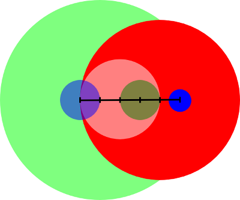

In my research lab at UCSB, we routinely run large-scale experiments that, essentially, need lots of computation and memory. These are pretty cool to run, but setting them up can be quite cumbersome. To make this task easier on us, we have been running...
Read more »Today, let’s challenge ourselves with Codility’s Iota 2011 challenge. The details of the challenge are in the link (I can’t copy them here because of copyright :) ).
Essentially, we are playing something very similar to the board game Dominoes. We...
Read more »Today’s challenge: given an array, find all combinations of three numbers that sum up to X. Target complexity: O(N2)
Input: array = [2, 3, 1, -2, -1, 0, 2, -3, 0], X = 0
Expected output: [(-3, 0, 3)] * 3 + [(-3, 1, 2)] * 2 + [(-2, -1, 3...
This challenge on Codility is an interesting one: given a number of disks of various radii distributed over a line, can you count the total number of intersections in O(N·log(N))?
Here’s an example:

To have a clear idea of how to solve this, I...
Read more »Hello people! The International Capture The Flag hacking competition iCTF 2011, the biggest CTF so far, is over, and it’s time for writeups! Here’s the solutions of the challenges I wrote. Hope you enjoyed them